ניתן להוריד את כל הסיפורים למחשב מקובץ בסוף המאמרים
סיפור א' - בזכות פנקס ההודיה

סיפור ב' - בזכות שירת מזמור לתודה
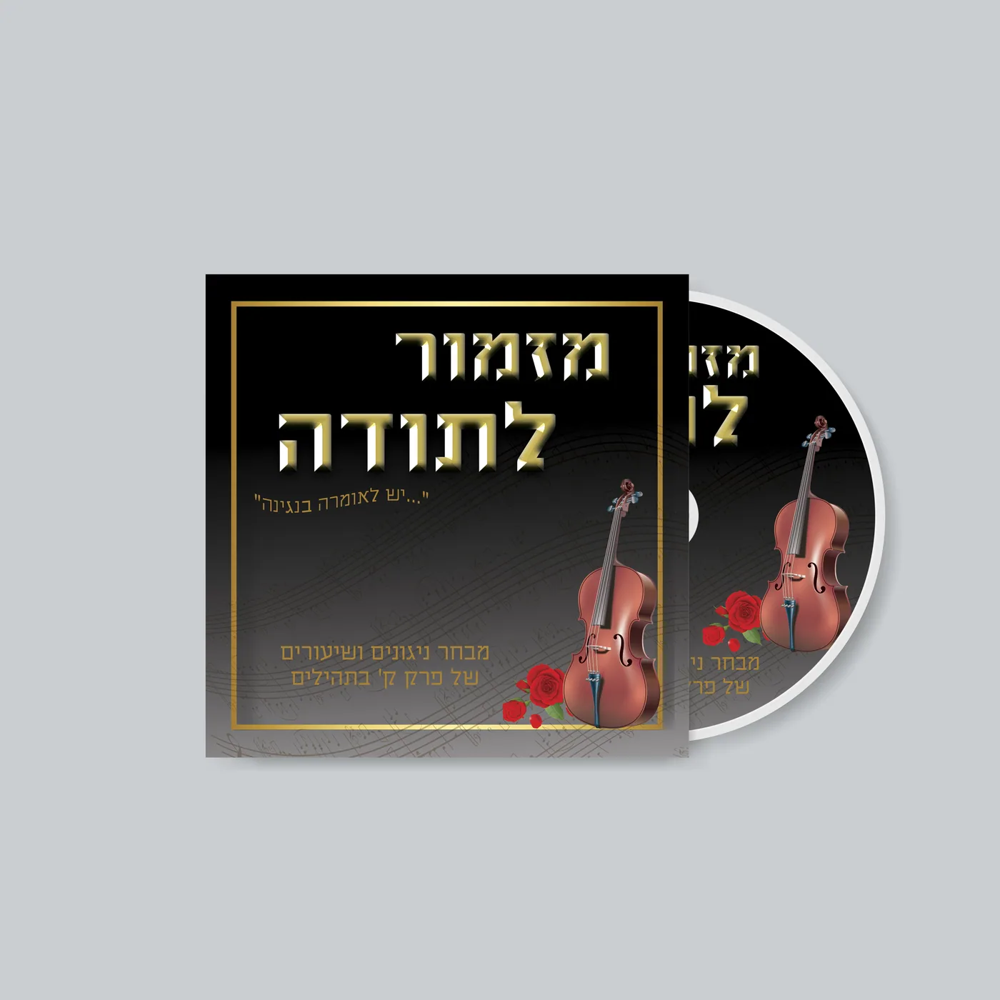
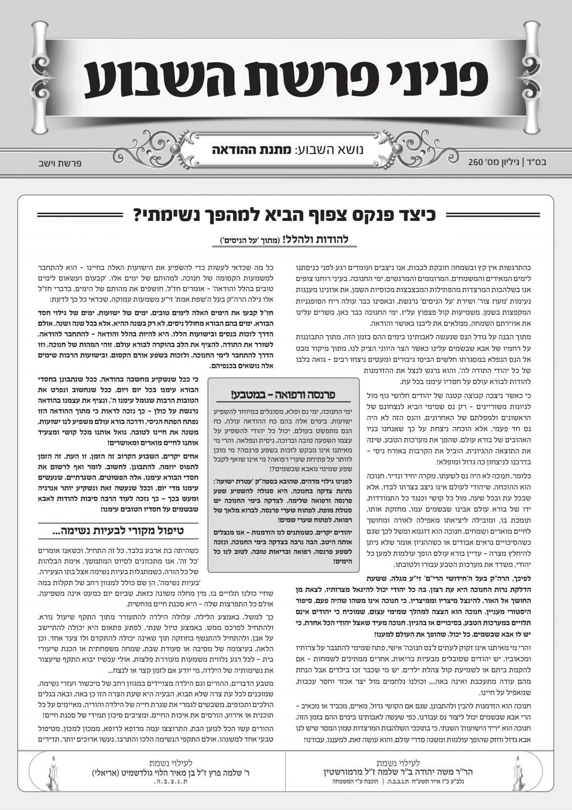
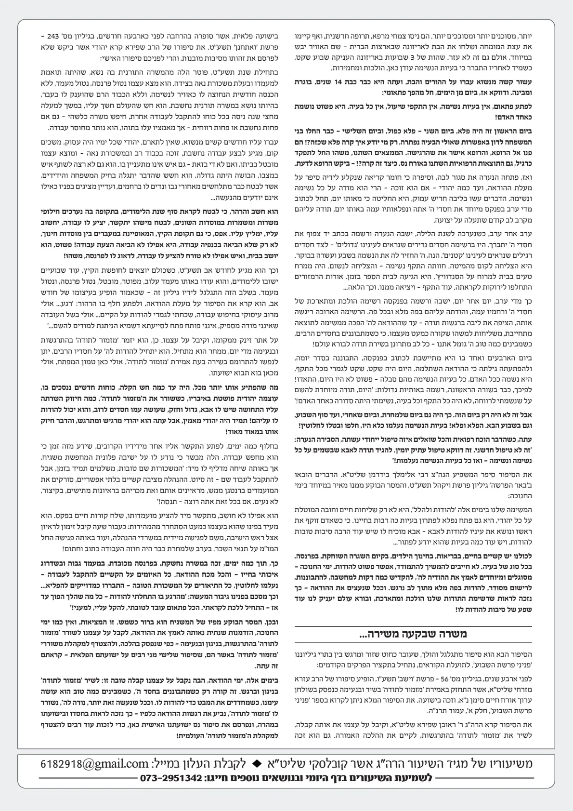
סיפור ג' - בזכות מנגינת מזמור לתודה

סיפור ד' - ההודיה שהחזירה את הגניבה
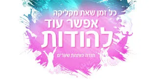
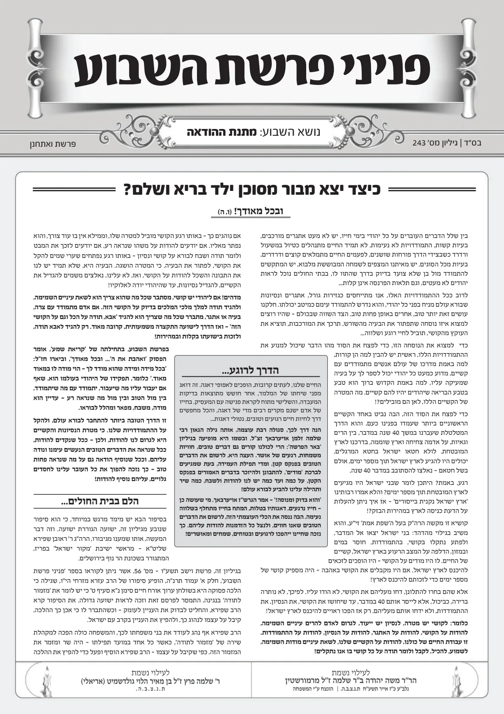
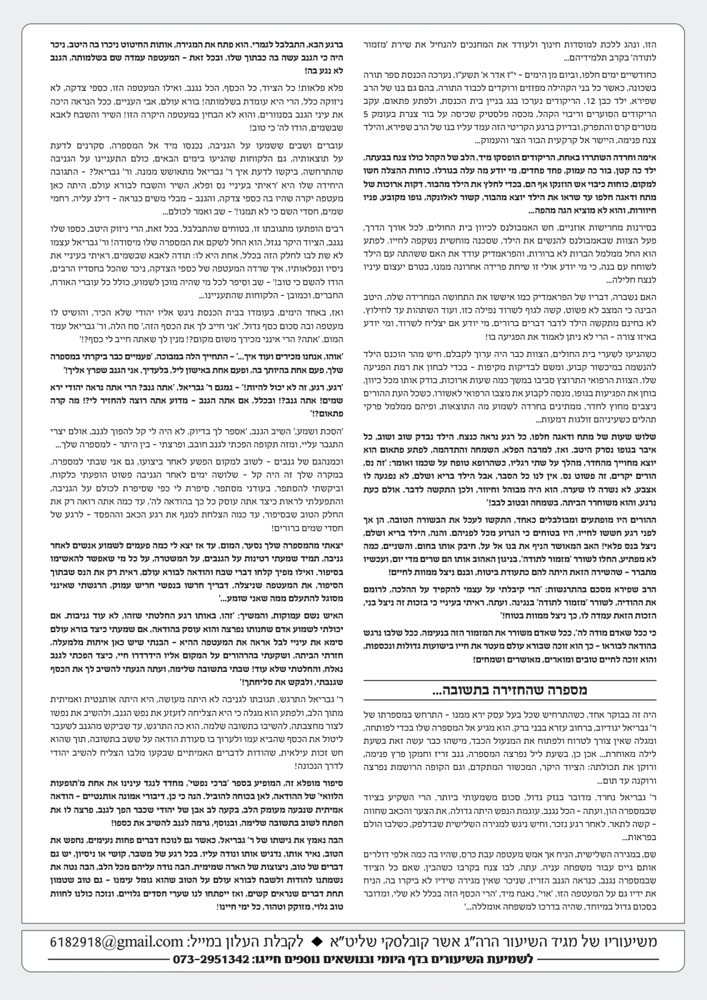
סיפור ה'- תודה שהביאה מליון דולר
סיפור ו - בזכות ארבעים יום מזמור לתודה
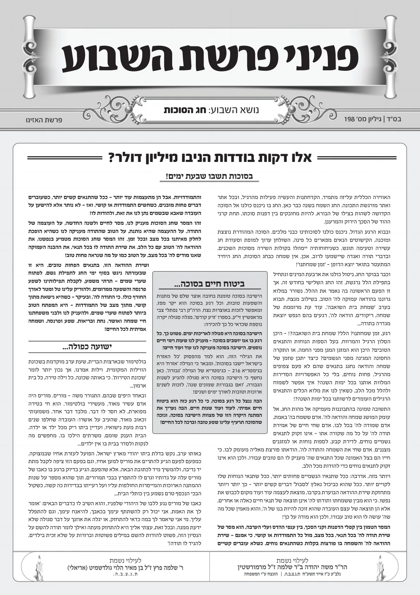
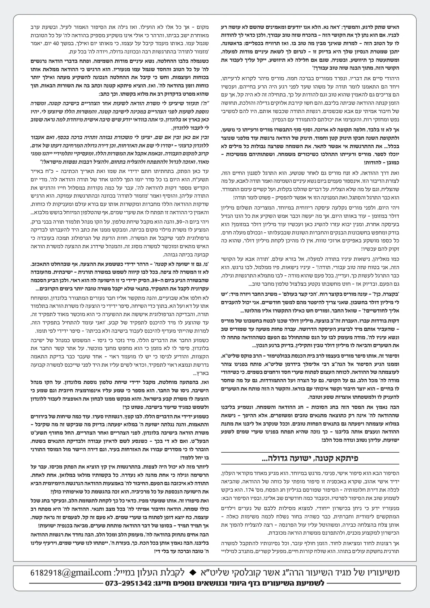
סיפור ז - הפקק שהחזיר בתשובה
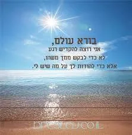
סיפור ח - הדירה שהגיעה בזכות מזמור לתודה
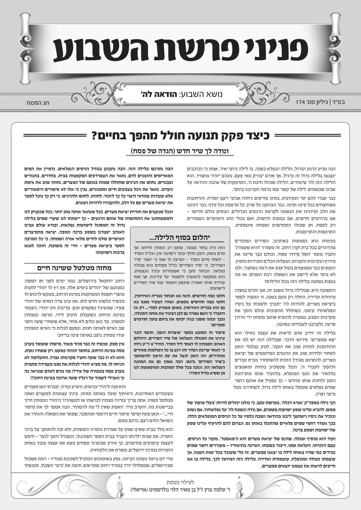
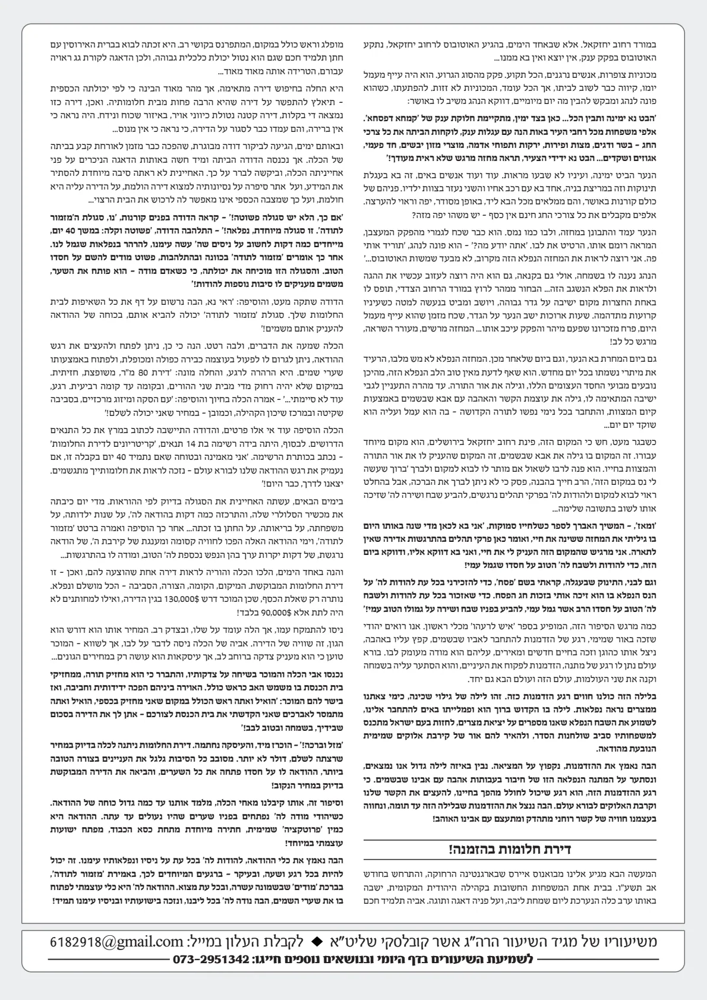
סיפור (וידאו) נפלא מהרב אשר קובלסקי - ההודיה שנתנה חיים לחולה
סיפורים ט' - י' כוחה של מנגינת מזמור לתודה
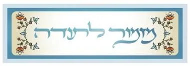
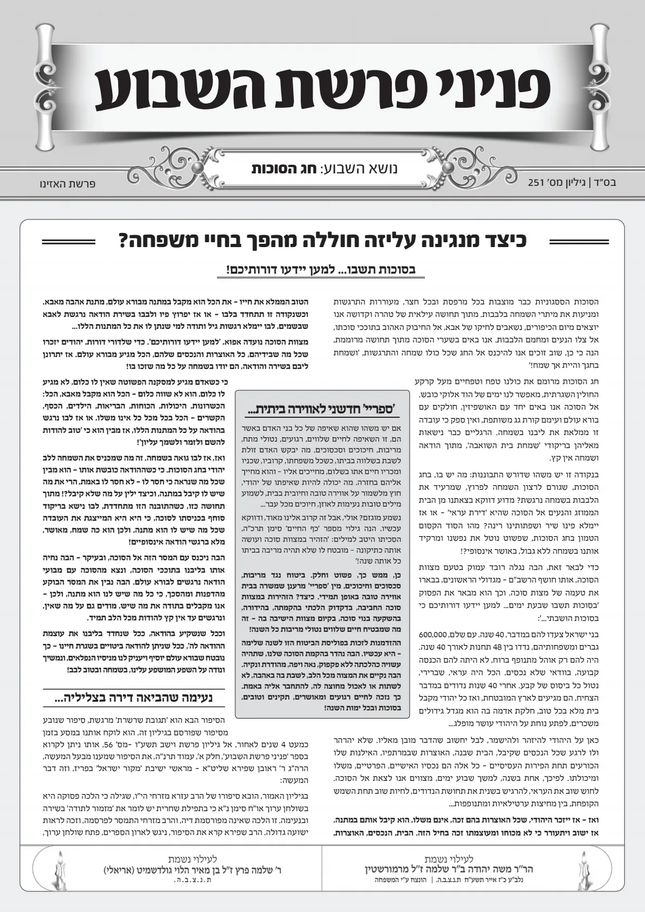
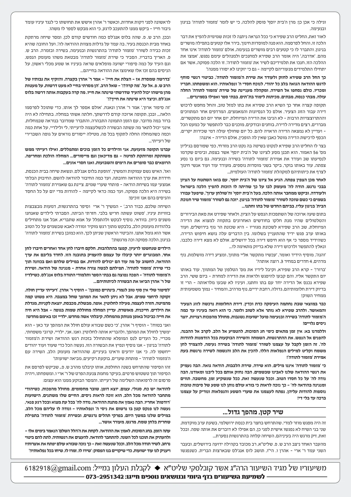
הרב יוסף דוד סוקר מחבר ספר התודה - מספר על מעלת ההודאה - מרתק!
סיפור 11 - פנקס ההודיה שהביא דירה
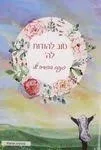
סיפור 12 - רגלים בזכות ההודיה
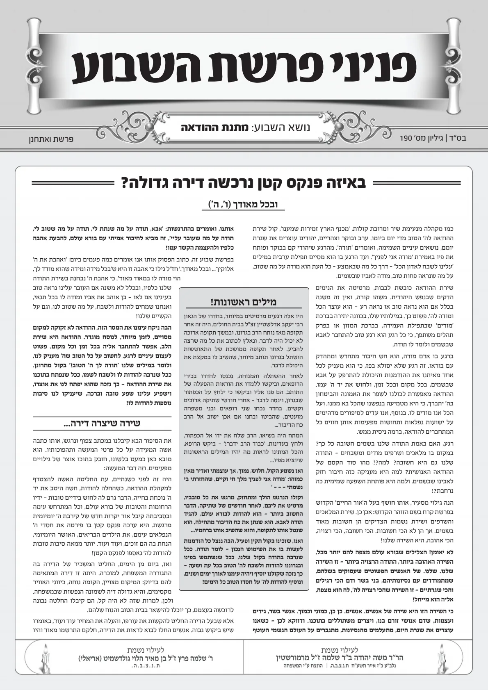
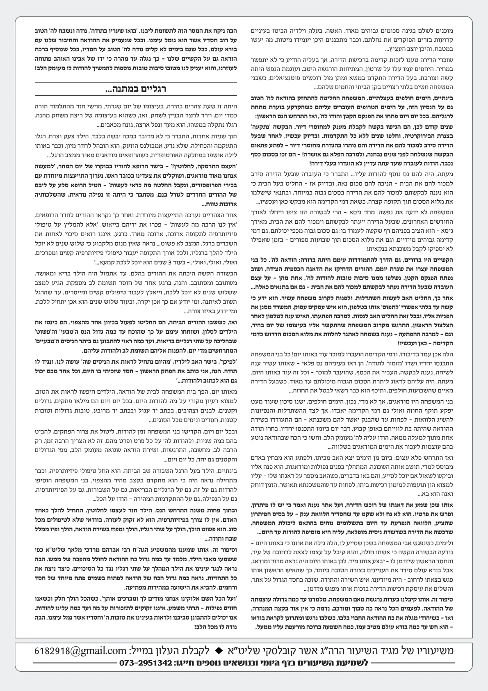
שירת נשמת כל חי הרב יוסף מוראדי
סיפור 13 - מזמור לתודה מציל חיים
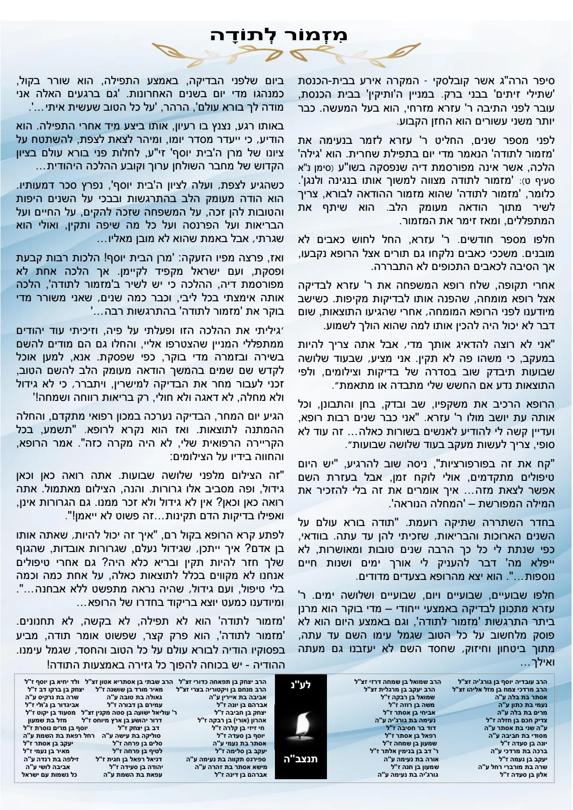